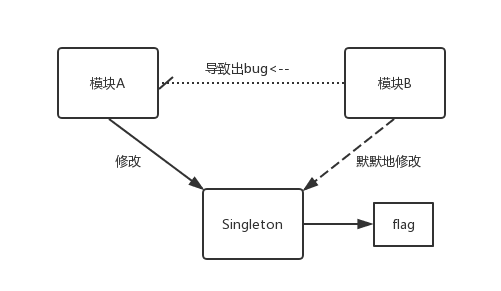

单例模式是一个在iOS里面备受使用的设计模式。但是我们在尽情使用它的时候，一定要注意到它其实也有很多隐含的问题。 其实这篇文章也相当于看了objcio上的避免滥用单例的一篇总结。 结合自己最近开发的心得，来讲一下单例的一些利与弊吧。
首先单例最原始的创建方式就是
static sharedInstance = nil;
@implementation Singleton
+(instancetype)sharedInstance {
if(sharedInstance) {
sharedInstance = [[Singleton alloc] init];
}
return sharedInstance;
}
@end但是这种创建方式在多线程环境下会出问题，假如两条线程同时执行到if的话，就会各自获取到两个实例了。为了解决这个问题，我们可以想到上锁，于是有了下面这个版本：
static sharedInstance = nil;
@implementation Singleton
+(instancetype)sharedInstance {
@synchronized(self)
if(sharedInstance) {
sharedInstance = [[Singleton alloc] init];
}
}
return sharedInstance;
}
@end但是因为我们都知道，访问一个锁的开销很大，考虑到性能的问题，iOS在最后给我们推出了一个GCD上的API:dispatch_once(dispatch_once_t *predicate,
DISPATCH_NOESCAPE dispatch_block_t block)
这个api确保了传入的block里的内容在程序运行期间只执行一次。运用这一点，我们可以很方便的写出单例模式的构建方法。
static sharedInstance = nil;
@implementation Singleton
+(instancetype)sharedInstance {
static dispatch_once_t onceToken;
dispatch_once(&onceToken, ^{
sharedInstance = [[Singleton alloc] init];
});
return sharedInstance;
}
@end没有异步问题，没有锁的访问，然后怎么样？完美。
但是现在，我们还有一个棘手的问题需要解决，我们需要屏蔽掉单例的其他初始化方式，因为我们总不想我们写好的一个单例最后还可以通过alloc] init的方式被初始化吧？下面我将介绍两种办法，皆是参考这篇文章的。
上代码：
static sharedInstance = nil;
@implementation Singleton
+(instancetype)sharedInstance { //公开的接口
static dispatch_once_t onceToken;
dispatch_once(&onceToken, ^{
sharedInstance = [[Singleton alloc] initPrivate];
});
return sharedInstance;
}
-(instancetype)init {//禁止掉公开的init方法
@throw [NSException exceptionWithName:@"这个是个单例"
reason:@"应该这样调用 [Singleton sharedInstance]"
userInfo:nil];
return nil;
}
-(instancetype)initPrivate {//写一个私有的用来真正初始化的方法
self = [super init];
if(self){
//做一些真正初始化的事。
}
return self;
}
@end第一种，就是简单粗暴的禁止外部调用[[Singleton alloc] init]来产生额外的实例，这也是我最喜欢的一种方式，原因等介绍完第二种方法以后再说。
上代码：
static Singleton * _instance;
@implementation Singleton
+ (instancetype)sharedInstance {
static dispatch_once_t onceToken;
dispatch_once(&onceToken, ^{
_instance = [[Singleton alloc] init];
});
return _instance;
}
+ (instancetype)allocWithZone:(struct _NSZone *)zone
{
static dispatch_once_t onceToken;
dispatch_once(&onceToken, ^{
_instance = [super allocWithZone:zone];
});
return _instance;
}
- (id)copyWithZone:(NSZone *)zone
{
return _instance;
}
@end这样子写确保了外部调用+sharedInstance、alloc-init、-copy三种方法来获取Singleton的实例都会获取到同一个实例。但是我并不喜欢这种创建方式。原因就是第一种写法限制来外部只能通过sharedInstance的方式来获取单例，而第二种可以通过alloc-init的方式来获取实例的话就会和其他非单例类混在一起，尽管它本质是单例，但是你不觉得外表看起来也像是个单例会更好吗？而且这样子写代码也更加清晰。
总结为两点：
草草略过了单例的优点，我们来看看单例模式下的那些坑吧！
作为程序员，我们都应该拒绝全局变量，然而单例模式实际上就是一个全局变量。对于单例，在全局区域内，假如有异步的调用了单例的话，就很可能出现问题——譬如两条线程同时对一个单例的内部数据进行修改的话，这样就很可能会导致数据出错。
再来考虑一个情况，两个独立的毫无联系的模块A和B，单例S里有一个标记flag用来控制模块A的操作，而且这个标记位只允许A来使用。但是出于一些奇怪的原因（可能一个疲惫的程序员的误操作，也可能是方法调用错误）模块B也修改了flag，直接导致了模块A出现了重大错误。下面我们来看看这个情况的对象图：

所以，使用单例要小心，一不小心就会导致两个看似毫无联系的模块莫名其妙地相互影响了。这么看起来，似乎单例提供了一个全局访问的入口并非是一件好事啊。
而在objcio里面还讲了一种情况就是一个有用户登录然后还有好友列表的应用，登录之后朋友列表SPFriendListViewController里可以看到朋友的头像，然后作者实现了一个单例SPThumbnailCache来下载和缓存朋友们的头像。由于单例“create once, live forever”的特性，直到登出这个需求的出现之前，在这里都非常适用。登出功能一旦出现，意味着要清理掉所有缓存和更换一个SPThumbnailCache（其实我很好奇为什么作者不干脆写一个清理缓存的接口得了）。而由于dispatch_once的特点，单例没法反复创建，按照文中的意思，可以不使用dispatch_once来创建单例，接着再实现一个teardown方法来将单例置nil，完了再新建单例来满足需求。 可是这种方法也有弊端，最后通过了一种叫依赖注入的方式解决了（依我看来，就是单例不适用于现在的需求啦，然后就不用单例了～）这个问题，有兴趣的可以看看避免滥用单例。
单例模式，也有弊端，一个是因为它的全局特性可能被滥用，二是因为需求变更可能导致当年写的代码再也不适用（这个就是上述的第三点，感觉并不好避免，慎重一点吧！），使用的时候一定要小心为上啊！
这个问题困扰了我许久了，于是今天我决定终结这个疑惑。我谷歌了一下这个问题，于是在stackOverflow上看到了不同的答案，其中一个回答是说WWDC2015中的一个视频“Implementing UI Designs in Interface Builder”里的Apple工程师是这么说的： And the last option I want to point out is the storage type, which can either be strong or weak. In g……
继续阅读最近在看ASDK（AsyncDisplayKit）源码的时候看到了ASDK写了一个ASDisplayNode的extension，里面声明了一堆ivar，然后又在各种ivar之前加入了@package、@protected、@public的字段，出于好奇它的作用，我先去查了一下这四种关键字的意义，如下： 当extension声明在.h或者声明在.m中，里面ivar的作用域是不同的。而如果extension是声明在.m文件里的，无论如何在这个.m以外，都无法获取到这个extension里变量。（……
继续阅读